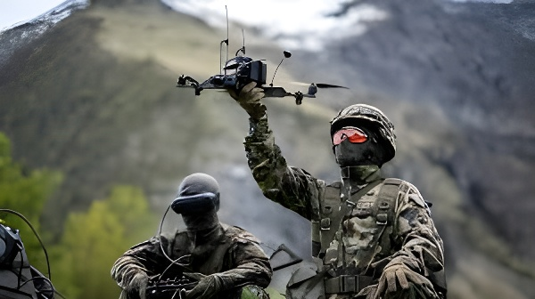

Depuis septembre 2025, une vague sans précédent d'incursions de drones attribuées à la Russie frappe le continent européen : violations répétées de l'espace aérien polonais, chute d'un drone sur un immeuble résidentiel roumain à Galati le 29 mai 2026, brouillages GPS sur les vols civils dans la Baltique, gouvernement letton emporté par la crise. Ce qui semblait être des incidents isolés révèle une stratégie délibérée de Moscou — une guerre sous le seuil des armes, conduite dans les airs, pour tester, déstabiliser et intimider ses voisins membres de l'OTAN et de l'Union européenne.
C'est dans la nuit du 9 au 10 septembre 2025 que l'Europe prend brutalement conscience de l'ampleur du phénomène. Lors d'une attaque massive contre l'Ukraine — 415 drones et plus de 40 missiles lancés sur quinze régions ukrainiennes —, la Russie envoie simultanément une vingtaine d'engins vers la Pologne. Le Premier ministre Donald Tusk annonce devant le Parlement que 19 violations de l'espace aérien polonais ont été enregistrées entre 23h30 et 6h45. Des avions de chasse polonais et néerlandais sont mobilisés, soutenus par un avion-radar italien et une batterie Patriot allemande. C'est la première fois qu'un pays membre de l'OTAN abat activement des drones russes sur son propre territoire.
Au moins trois engins — des Shahed de conception iranienne, désormais produits en Russie — sont interceptés et détruits. Une maison et une voiture sont endommagées à Wyryki-Wola, dans l'est du pays. Tusk convoque l'article 4 du Traité de l'Atlantique Nord — qui prévoit des consultations entre alliés lorsque la sécurité territoriale est menacée — et déclare que la Pologne se trouve à son niveau le plus proche d'un conflit ouvert depuis la Seconde Guerre mondiale. Donald Tusk précise par ailleurs qu'un grand nombre de ces drones ont été guidés directement depuis le Bélarus, allié de Moscou, et non depuis le territoire ukrainien.
« C'est la violation la plus grave de l'espace aérien européen par la Russie depuis le début de la guerre. »
— Kaja Kallas, Haute représentante de l'UE pour la politique étrangère, 10 septembre 2025En parallèle des intrusions physiques, la Russie mène depuis 2022 une campagne de brouillage et de leurrage GPS (spoofing) dans l'espace aérien baltique et nordique. Les Nations baltes — Finlande, Lettonie, Lituanie, Estonie — ont signalé dès 2024 une augmentation massive de ces interférences, la Lettonie enregistrant à elle seule 820 cas d'interférences électroniques sur ses routes aériennes cette année-là. Officiellement, Moscou justifie ces brouillages comme des mesures défensives destinées à protéger ses territoires des attaques de drones ukrainiens. Les pays baltes y voient une stratégie offensive délibérée.
La portée de ce brouillage dépasse très largement la zone de conflit immédiate : en septembre 2025, l'avion transportant la présidente de la Commission européenne Ursula von der Leyen vers Plovdiv, en Bulgarie, est affecté par un brouillage GPS et doit atterrir en se basant sur des cartes papier. L'incident, qui ne sera pas formellement investigué par les autorités bulgares — tant ce type d'interférence est devenu fréquent —, suscite la réaction du secrétaire général de l'OTAN Mark Rutte, qui dénonce une campagne aux effets « potentiellement désastreux ». En 2024, un avion transportant le secrétaire à la Défense britannique avait déjà subi le même sort à l'approche du territoire russe.
Début de l'invasion russe de l'Ukraine. Les premiers fragments de drones russes commencent à tomber sur le territoire roumain. La Lettonie recense 820 cas d'interférences GPS en 2024 seul. Les pays baltes et nordiques alertent régulièrement sur la montée des brouillages.
Vague d'incidents sans précédent : 19 drones russes violent l'espace aérien polonais dans la nuit du 9 au 10 septembre. La Pologne invoque l'article 4 de l'OTAN. Le 15 septembre, un drone est neutralisé au-dessus des bâtiments gouvernementaux de Varsovie. La Roumanie dénonce à son tour une nouvelle incursion. Des survols suspects sont signalés au Danemark, en Allemagne, au-dessus d'aéroports et de sites militaires.
L'avion d'Ursula von der Leyen est affecté par un brouillage GPS en route vers la Bulgarie. Sofia renonce à toute investigation formelle, tant ces incidents sont devenus courants. Mark Rutte dénonce une campagne russe à effets « potentiellement désastreux ».
Un drone ukrainien dévié par des brouillages russes frappe la cheminée d'une centrale électrique en Estonie. Un autre explose dans un champ en Lettonie. Dans les deux cas, les radars n'avaient pas pu détecter les engins, révélant les lacunes des défenses aériennes des États baltes.
La Commission européenne présente son Plan d'action sur la sécurité des drones et des contre-drones, porté par la vice-présidente exécutive Henna Virkkunen. Le plan s'articule autour de quatre piliers : prévention, détection, intervention, défense.
La Première ministre lettone Evika Silina est contrainte à la démission après avoir renvoyé son ministre de la Défense, jugé responsable de l'incapacité du pays à prévenir les intrusions de drones déviés. C'est la première chute d'un gouvernement européen directement liée à la question des drones russes.
Un drone russe s'écrase sur un immeuble résidentiel à Galati, dans l'est de la Roumanie, faisant deux blessés légers et forçant l'évacuation de 70 habitants. C'est la première fois qu'un drone frappe un bâtiment civil sur le territoire d'un État membre de l'OTAN depuis le début de l'invasion russe en 2022. La Roumanie dénonce une « grave et irresponsable escalade » et convoque le Conseil suprême national de Défense.
Dans la nuit du 28 au 29 mai 2026, la Russie lance une nouvelle vague d'attaques de drones contre des cibles civiles et des infrastructures en Ukraine, à proximité de la frontière fluviale avec la Roumanie. L'un des engins pénètre dans l'espace aérien roumain, est suivi par radar jusqu'à la partie sud de la ville de Galati, grande ville portuaire de l'est du pays, et s'écrase sur le toit d'un immeuble d'habitation. Un adolescent de 14 ans et une femme de 53 ans sont légèrement blessés ; 70 habitants sont évacués. C'est la première fois, depuis le début de l'invasion russe de l'Ukraine en février 2022, qu'un drone frappe un immeuble résidentiel sur le territoire d'un État membre de l'OTAN.
Bucarest attribue à la Russie « l'entière responsabilité » de l'incident et convoque le Conseil suprême national de Défense. Le secrétaire général de l'OTAN Mark Rutte assure la Roumanie de la « solidarité absolue » de l'Alliance. Ursula von der Leyen condamne l'attaque. À Moscou, Vladimir Poutine affirme que « la Russie n'a jamais menacé et ne menace pas les pays européens ». L'armée roumaine n'avait pas été en mesure d'intercepter le drone avant l'impact. Selon les données officielles roumaines, 12 fragments de drones avaient déjà été retrouvés sur le sol du pays depuis le début de 2026, mais jamais encore un appareil n'avait percuté un immeuble.
« Si la sécurité d'un pays de l'OTAN est engagée, la réponse peut être dévastatrice. »
— Jean-Noël Barrot, ministre français des Affaires étrangères, 29 mai 2026Avant même l'incident de Galati, la crise des drones avait déjà renversé un gouvernement européen. La Première ministre lettone Evika Silina avait été poussée à la démission début mai 2026 après une série d'intrusions de drones déviés par les brouillages russes — lesquels, ciblant les installations industrielles et terminaux pétroliers autour de Saint-Pétersbourg, redirigent involontairement (ou délibérément, selon les autorités européennes) des drones ukrainiens vers les États baltes. Ces incidents, sans victimes ni dégâts majeurs, avaient néanmoins mis en lumière l'incapacité des défenses aériennes lettones à neutraliser ces engins errants. Fin mai, un nouveau gouvernement quadripartite dirigé par le centriste Andris Kulbergs était investi avec 66 voix sur 100. Son mandat, essentiellement technique jusqu'aux législatives d'octobre, est placé sous le signe de la défense aérienne.
Ursula von der Leyen, en visite à Vilnius à la même période, a directement mis en cause Moscou, l'accusant de chercher à « déstabiliser les sociétés démocratiques » de l'UE. Cette formulation — plus politique qu'opérationnelle — illustre la difficulté à répondre à une menace hybride qui ne franchit pas ouvertement le seuil de la guerre.
| Pays | Incident notable | Type de menace | Réponse |
|---|---|---|---|
| 🇵🇱 Pologne | 19 violations en une nuit (sept. 2025) | Drones Shahed directs | Art. 4 OTAN, 3 drones abattus |
| 🇷🇴 Roumanie | Immeuble frappé à Galati (mai 2026) | Drone dévié/offensif | Conseil national de Défense |
| 🇱🇻 Lettonie | 820 cas GPS en 2024 ; chute de gouvernement | Spoofing / drones déviés | Gouvernement Kulbergs |
| 🇪🇪 Estonie | Drone frappe une centrale (mars 2026) | Drone ukrainien dévié | Alerte OTAN |
| 🇩🇰 Danemark | Survols d'aéroports (sept. 2025) | Drones non identifiés | Enquête ; attribution incertaine |
Face à cette accumulation d'incidents, la Commission européenne a présenté le 11 février 2026 un Plan d'action sur la sécurité des drones et des contre-drones, porté par la vice-présidente exécutive Henna Virkkunen. Le texte s'articule autour de quatre piliers : prévention, détection, intervention et défense. Il prévoit notamment la création d'un label « Drone de confiance de l'UE » pour identifier les équipements sécurisés, le renforcement des capacités de détection cellulaire (5G/6G), et un appel à des marchés publics communs pour les systèmes anti-drones. Virkkunen a déclaré que « tout peut être utilisé comme une arme contre nous » et que l'Europe devait impérativement développer des solutions conçues sur son territoire. Un cadre juridique européen en matière de lutte anti-drones est prévu pour 2030.
Ce plan traduit une prise de conscience politique réelle, mais les lacunes demeurent profondes. Les incidents en Estonie et en Lettonie ont illustré que les radars nationaux ne parviennent pas toujours à détecter les petits drones avant impact. La coordination entre États membres reste insuffisante, les réponses étant encore largement nationales. L'exercice militaire « Hedgehog » de l'OTAN en mai 2025, conduit avec des dronistes ukrainiens, a constitué un premier test grandeur nature de défense aérienne anti-drone sur le flanc est, mais la Pologne et la Roumanie ont bien montré que l'entraînement ne comble pas les manques capacitaires.
Ce qui se joue dans les ciels européens depuis septembre 2025 n'est pas un débordement de guerre : c'est une stratégie. La Russie teste méthodiquement les limites de la réponse occidentale, en maintenant chaque incident juste en deçà du seuil qui déclencherait une riposte formelle de l'OTAN. Les drones déviés permettent de plaider l'accident, les brouillages GPS de nier l'intentionnalité, et les Shahed tombant sur des champs plutôt que sur des ministères d'éviter l'escalade directe. Jusqu'au 29 mai 2026 et à l'immeuble de Galati, chaque incident pouvait encore se plaider en coulisse. Mais un drone sur un immeuble habité, dans un pays membre de l'Alliance — avec deux blessés et une évacuation en pleine nuit — est un message politique d'une clarté sans précédent. L'Europe n'a pas encore trouvé la réponse collective à une guerre qui ne dit pas son nom.